What LedgerForce will look like
Twelve high-fidelity mockups with realistic Australian data for Harbour & Co Pty Ltd (a 14-person Salesforce consultancy). They follow the 12 UI principles below and use only the design tokens in tokens.css. Static HTML — open any screen, try the moon button for dark mode.
Screens
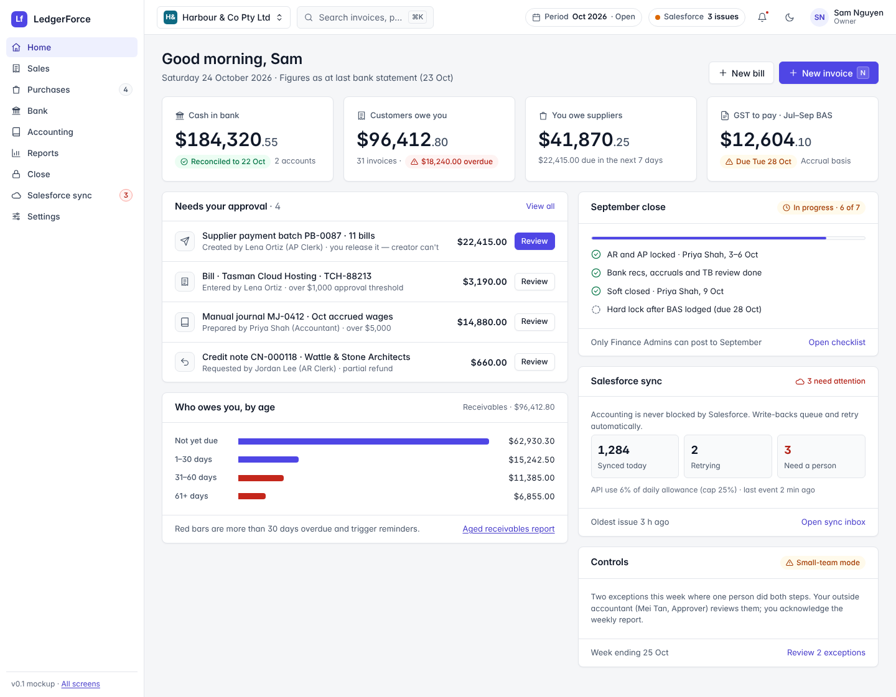
01 · HomeCash, who owes you, what you owe, GST due, approvals, close and sync health.
Owner
Owner
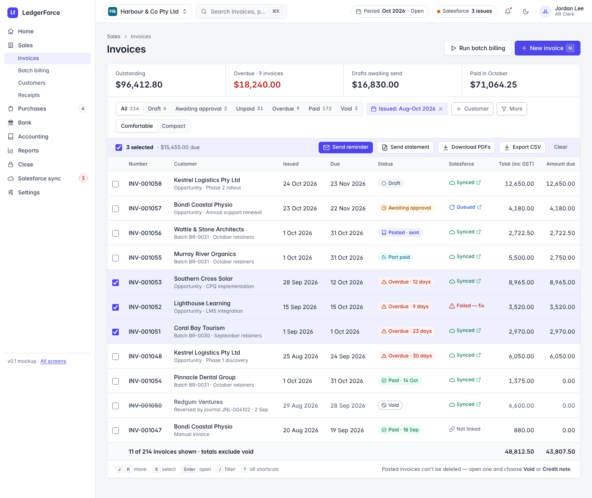
02 · InvoicesStatus chips, Salesforce link on every row, bulk reminders, density toggle.
UC-01 · UC-04
UC-01 · UC-04
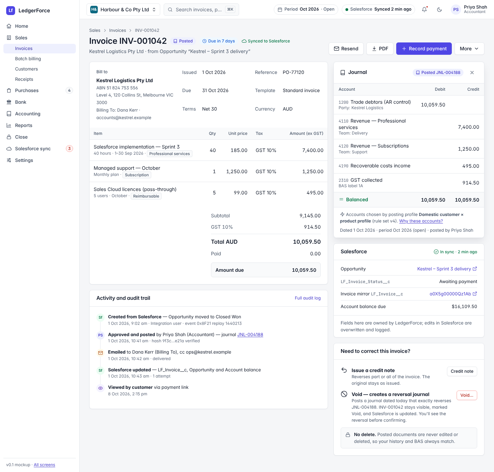
03 · Invoice detailLines and GST, journal panel open, sync status, audit trail, Void creates reversal.
UC-01 · UC-11
UC-01 · UC-11
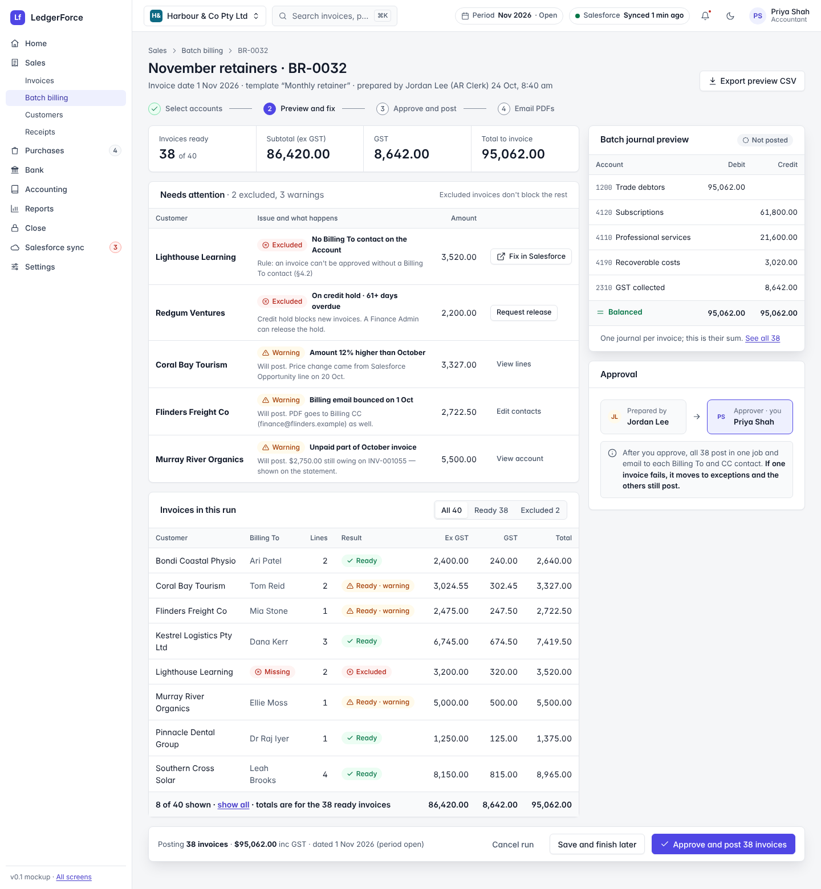
04 · Batch billing previewExceptions and warnings, totals, batch journal, approve and post 38.
UC-02
UC-02
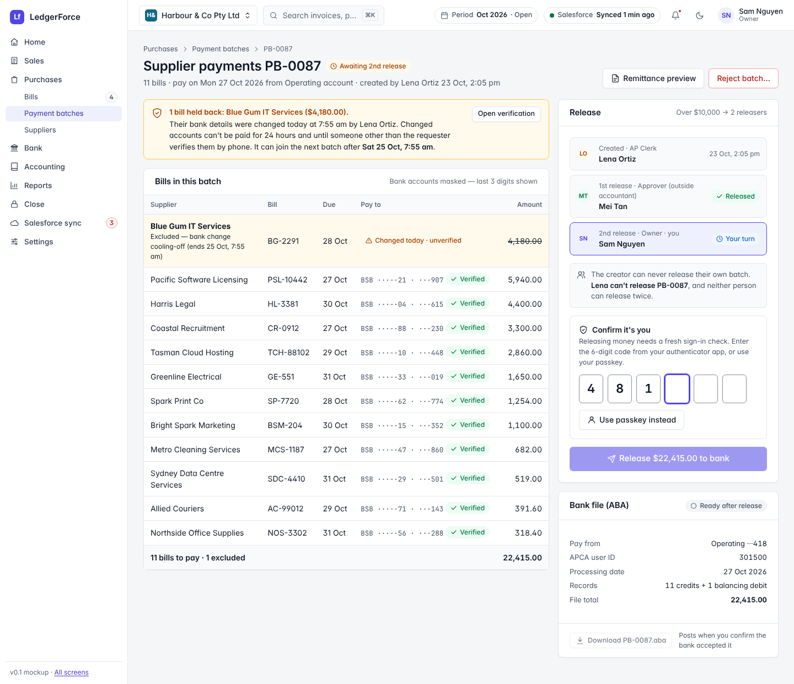
05 · Release supplier paymentsMaker-checker chain, step-up MFA, cooling-off exclusion, ABA file.
UC-06
UC-06
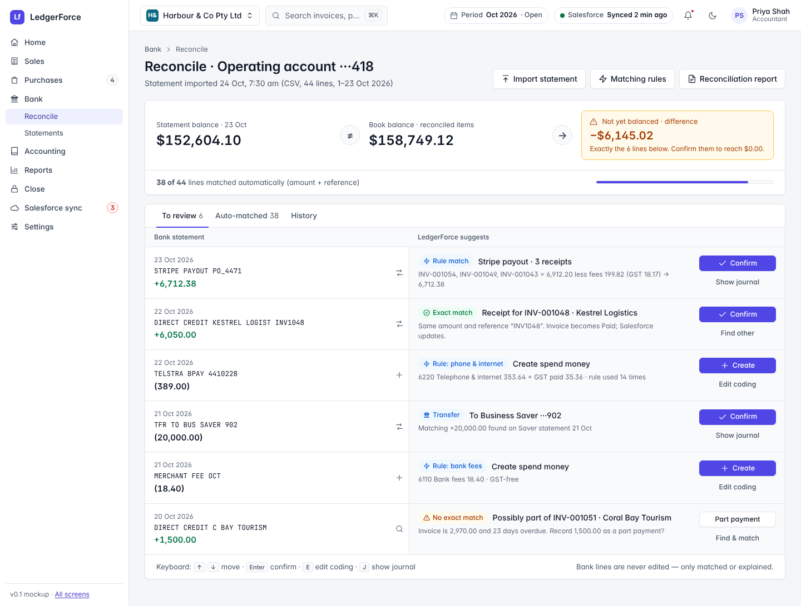
06 · Bank reconciliationStatement vs book balance, exact and rule matches, create transactions.
UC-08
UC-08
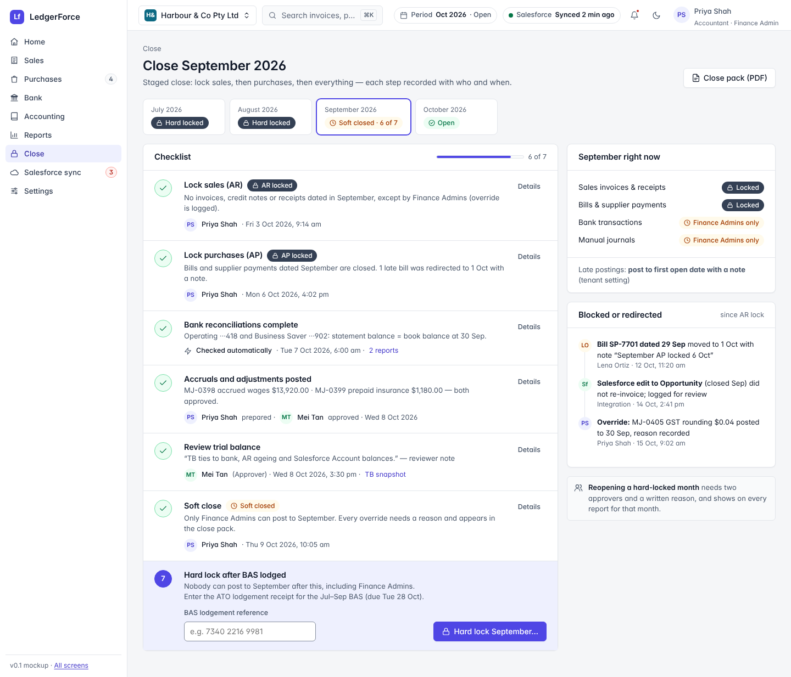
07 · Month-end closeAR lock → AP lock → soft close → hard lock, who and when for each step.
UC-10
UC-10
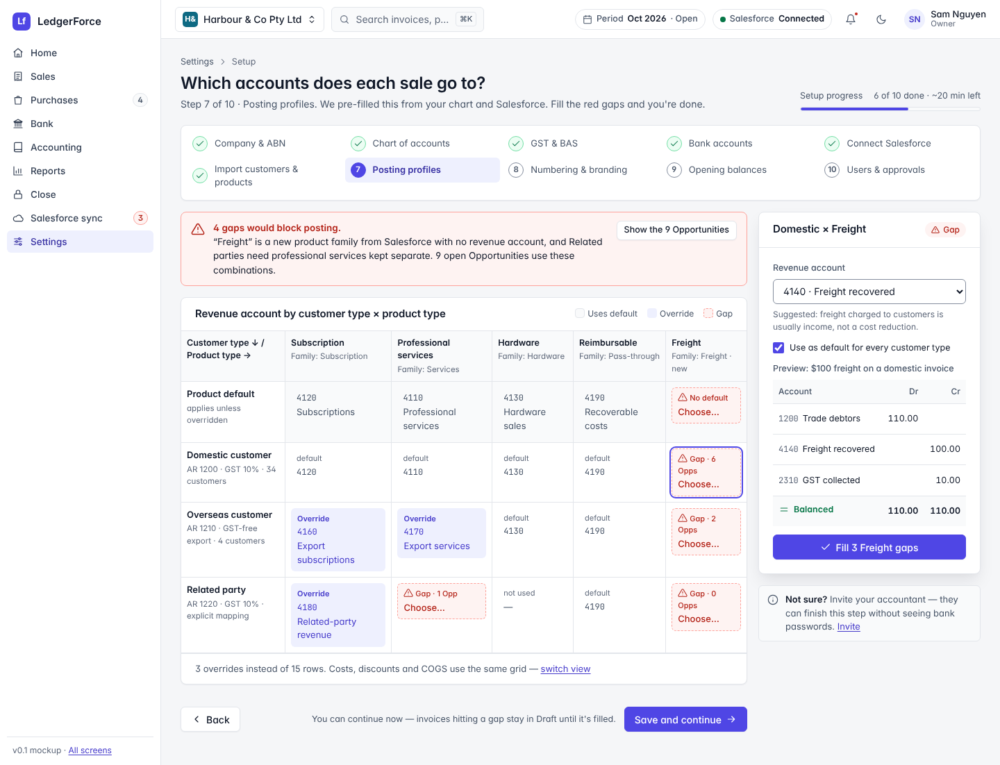
08 · Setup wizard, step 7Customer type × product type matrix with gap flags and journal preview.
§4.1 · §4.4
§4.1 · §4.4
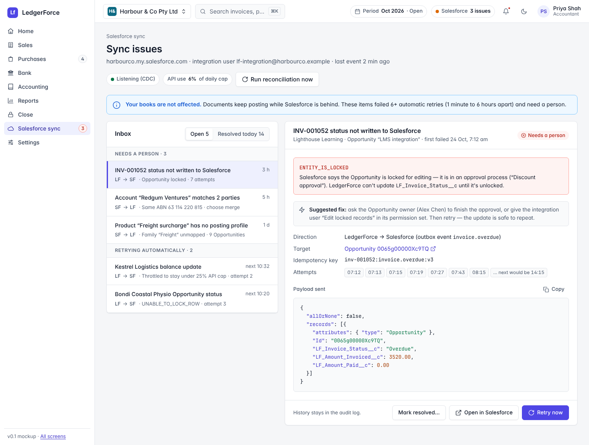
09 · Sync issues inboxSalesforce error in plain words, payload, attempts, one-click retry.
§5.6
§5.6
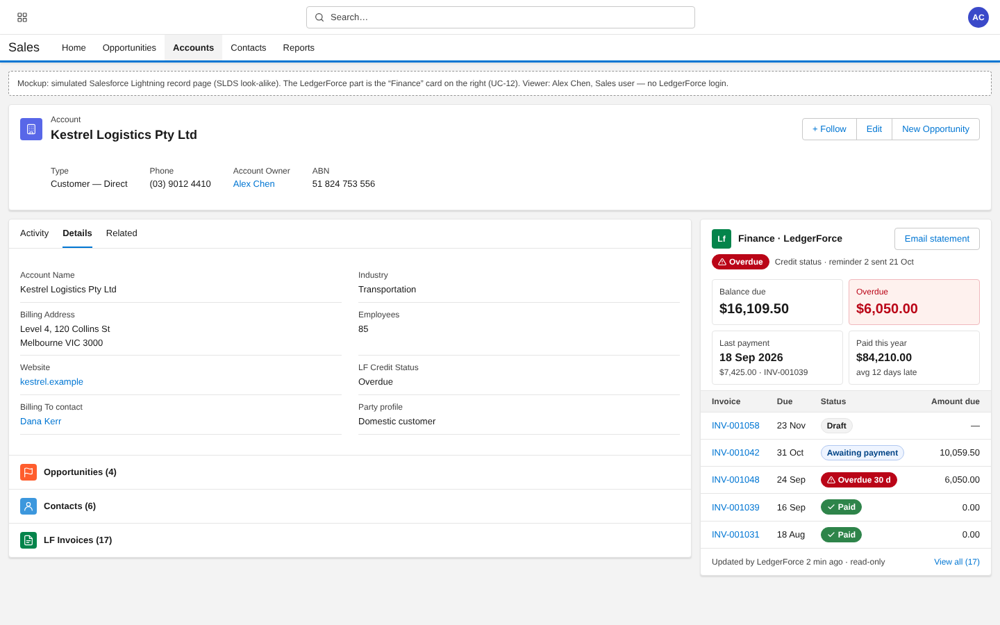
10 · Inside SalesforceLightning card on the Account: balance, overdue, last payment, 5 invoices.
UC-12
UC-12
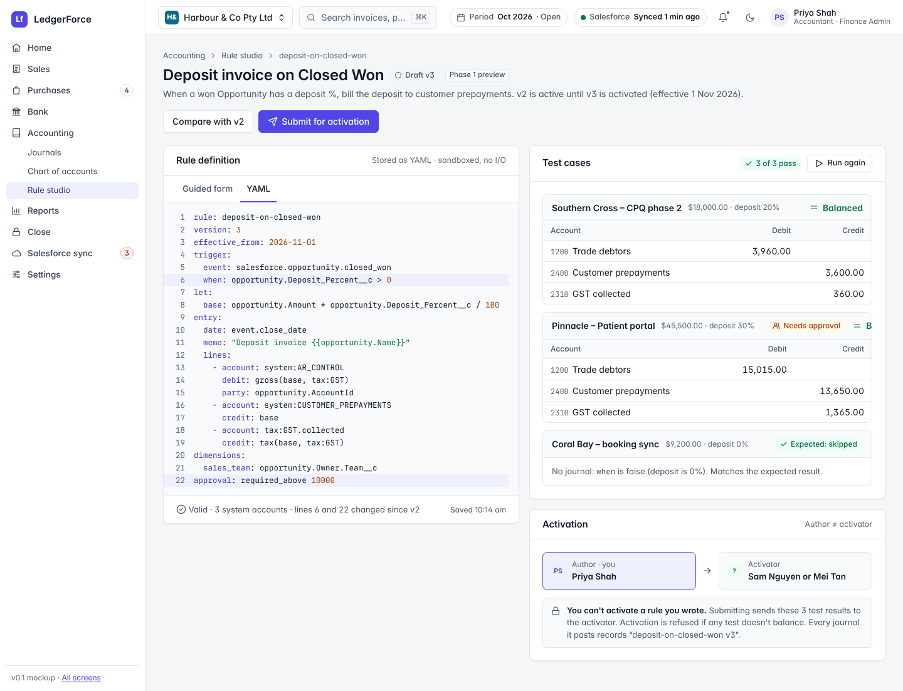
11 · Rule studioYAML rule, three balancing test cases, author can't activate.
UC-09 · Phase 1
UC-09 · Phase 1
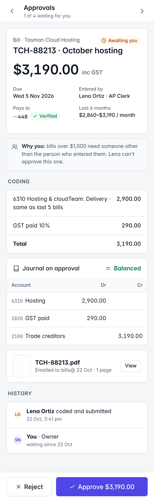
12 · Approve on your phoneBill, coding, journal, why you, one-thumb approve.
UC-05 · 390 px
UC-05 · 390 px
The 12 principles
- Every number is traceableOne click from any figure to the documents and journal behind it.
- Status is a word plus a colourNever colour alone. Every chip has text and an icon.
- Money is set for readingRight-aligned, tabular figures, 2 decimals, negatives in (parentheses) announced as “minus”.
- Show the journal before you postPreview mode is one click on every postable document, open by default in reviews.
- Nothing posted is deletedVoid says “creates reversal journal”; delete is shown as unavailable, with the reason.
- Controls explain themselvesSoD, thresholds and lock dates appear as sentences before you act, not errors after.
- Two-person actions show both peopleMaker, checker and you — by name, role and time.
- Weakened controls are visibleSmall-team mode and overrides are labelled, reported and acknowledged.
- Sync is never hiddenSalesforce status on every synced record and in the top bar; books never wait for it.
- Keyboard-first entryEvery list and form works without a mouse; shortcuts are shown where they apply.
- Calm densityComfortable by default for owners, Compact for bookkeepers — same columns.
- Plain words first“Customers owe you” on top, “Accounts receivable” underneath. One primary action per view.